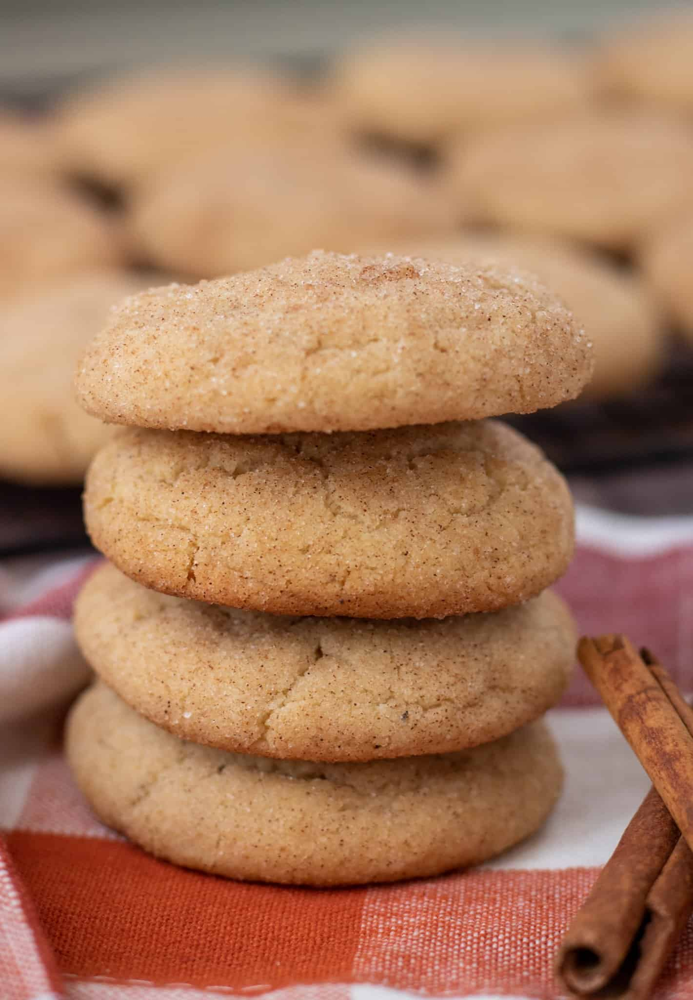
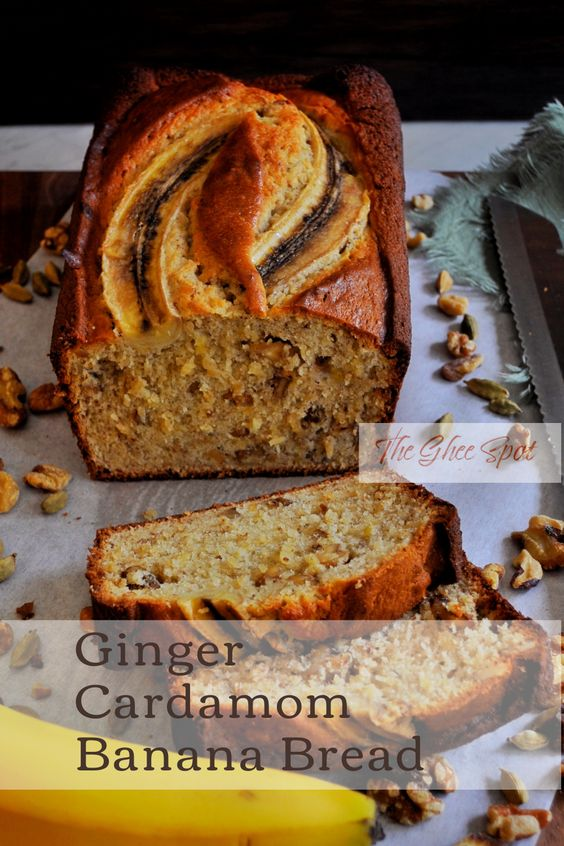

Recipes
Fudgy Date Brownies

This is a recipe that swaps processed sugar for dates! Great for anyone trying to cut processed sugar.
Ingredients
1 1/2 cups pitted dates
1 cup hot water
3/4 cup unsalted butter softened (1 1/2 sticks)
2 cold eggs
1 teaspoon vanilla extract
3/4 cup cocoa powder
1/2 cup plus 2 tablespoons all-purpose flour
Sea salt for sprinkling
Instructions
Grease or line an 8x8 baking pan. Preheat oven to 350F.
In a food processor or blender, puree the dates and hot water until smooth. Measure out a cup of the paste (mine yielded exactly a cup,) and transfer to a large bowl with the butter. Cream the butter and date paste until smooth. Add the eggs, one at a time and vanilla extract, mixing until fluffy and smooth. Add the cocoa and flour, and mix on low until well combined.
Spread batter into prepared pan, smoothing with the back of a spoon. Sprinkle a little sea salt on top.
Bake for 18-23 minutes, or until edges are set. Allow pan to cool while you prepare the glaze.
Whisk together the butter, honey and cocoa powder. Add vanilla and whisk until smooth. If the glaze seems a little runny- add a dash more of cocoa powder. If it seems too thick- you can add a splash of milk. Drizzle over the brownies and sprinkle with more sea salt.
Brownies will last for up to a week in a sealed container in the fridge.
Photo Gallery:


Chai Spice Brown Butter Snickerdoodles
This is a Christmas cookie recipe you'll want to bring to your next cookie swap or add to your Christmas baking list because it has alllll the holiday feels.
Even just the smell of these chai spice brown butter snickerdoodle cookies baking in the oven is heavenly...I'm talking sweet cinnamon, toasty chai spice, & nutty brown butter!!!
Ingredients
1 cup (2 sticks) unsalted butter, divided
3 cups All Purpose Flour, 375 grams
2 tsp Cream of Tartar
1 tsp Baking Soda
1 tsp Ground Ginger
½ tsp Ground Cinnamon
¼ tsp Ground Cardamom
¼ tsp Ground Cloves
¼ tsp Ground Allspice
¼ tsp Black Pepper
½ tsp Salt
1 ⅓ cup Granulated Sugar, 267g
2 Eggs, room temp
2 tsp Pure Vanilla Extract
ROLLING SUGAR
⅓ cup Granulated Sugar, 70g
1 tsp Ground Cinnamon
Instructions
Preheat oven to 375 degrees. Line two cookie sheets with parchment paper and set aside
Make the brown butter: melt 1 stick of butter in a small saucepan. Continue to melt, swirling around, until the mixture starts to foam up and you see small brown specks. The butter will start to smell nutty. Immediately remove from heat, transfer to a small bowl, and set aside to slightly cool.
In a medium bowl, whisk together the flour, cream of tartar, baking soda, spices, and salt, set aside.
In your stand mixer with a paddle attachment (or in a large bowl with a hand mixer), beat the remaining 1 stick of butter along with the cooled brown butter and granulated sugar on medium-high speed until smooth and creamy, about 3-4 minutes.
Add the eggs, one at a time, beating well after each addition. Add vanilla extract and beat on medium speed until combined, scraping down the sides and bottom of the bowl with a rubber spatula as needed.
Slowly add the dry ingredients in 3 stages, and mix just until combined.
To Make the Rolling Sugar: combine the granulated sugar and cinnamon together in a small bowl.
Roll cookie dough into 1" balls, and then roll in the cinnamon-sugar topping. Place about 3" apart on cookie sheets.
Bake cookies for 10 minutes, rotating halfway in between. They should be lightly browned on the bottom but not on the top. If they look flat, cook another 1-2 minutes.
Allow cookies to cool on the cookie sheets for 5 minutes before transferring to a cooling rack.
Store in an airtight container and keep room temperature for up to 1 week. Or, place in the freezer for up to 3 months.
Photo Gallery:
Ginger Caradamom Banana Bread
Sweet, aromatic, gingery, and cake-like. This easy ginger cardamom banana bread is a delicious twist on traditional banana bread recipe.
Ingredients
1 3⁄4 cup all-purpose flour
2 tsp baking powder
1⁄4 tsp baking soda
3⁄4 tsp salt
2 tsp ground cardamom
1 cup mashed overripe bananas (approximately 4 bananas)
1⁄2 cup whole milk
1 1⁄2 tbsp fresh ginger, grated
1 tsp vanilla extract
1⁄2 cup vegetable shortening
1 cup sugar
2 eggs, room temperature
1 cup walnuts (optional)
Instructions
Preheat oven to 350 degrees F
Grease and flour 9 1/4 x 5 1/2-inch loaf pan.
In a medium-sized mixing bowl, whisk together flour, baking powder, baking soda, salt, and cardamom.
In a small bowl, mix bananas, milk, ginger, and vanilla.
Using an electric mixer or stand mixer, beat shortening until creamy. Approximately 2 minutes.
Gradually beat in sugar.
Beat in 1 egg at a time and beat for one minute between eggs.
Beat banana mixture and flour mixture alternately into the shortening mixture in 2 additions each.
If using walnuts, stir them in.
Transfer batter to prepared loaf pan.
Bake the banana bread until baked through and you can insert a knife or skewer into the center and it comes out clean. Approximately 60-70 minutes.
Remove from oven and cool in loaf pan for 5 minutes.
Remove from loaf pan and cool on a wire rack.
Once cool, serve or store by putting it in an airtight container.